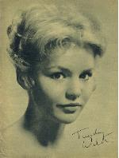

Saturday, May the 22nd, 2004
back to: title, date or indexes
Hooting Yard's New Zealand correspondent Glyn Webster writes:
This seems so eerily Frank Key-ish I'm wondering if you are involved:
Bathtime in Clerkenwell : Go find a friend with a Windows PC to watch this: an animated video for 'The Real Tuesday Weld's Bathtime in Clerkenwell' in which an army of cuckoos attempt to wake and bathe a reluctant human. [ Windows Media ] http://www.tuesdayweld.com/video/bathtime.html
Sadly, I have to report that I am innocent of any involvement in this project. In fact, I have not yet, at time of writing, even viewed the link. But readers of A Catalogue of 53 Birds will see why Mr Webster diligently reported this finding. Meanwhile, here, as a print-and-cut-out-and-frame souvenir, is a signed picture of Ms Weld:

Hooting Yard on the Air, April the 18th, 2019 : “On Fiends Of The Farmyard” (starts around 26:57)